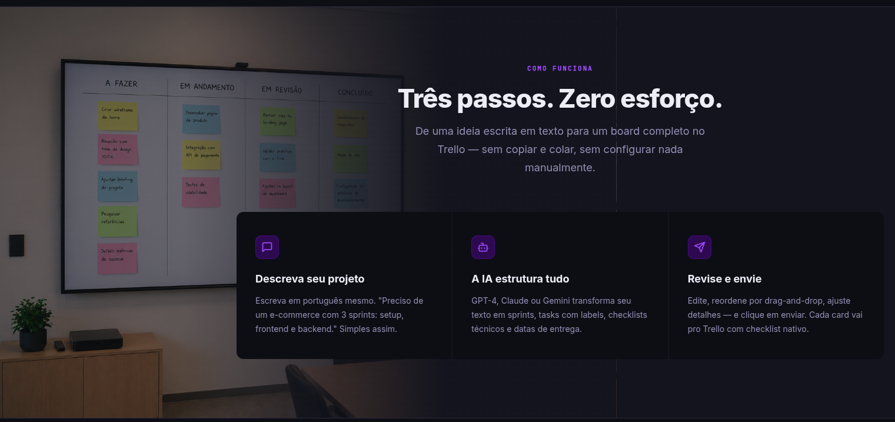
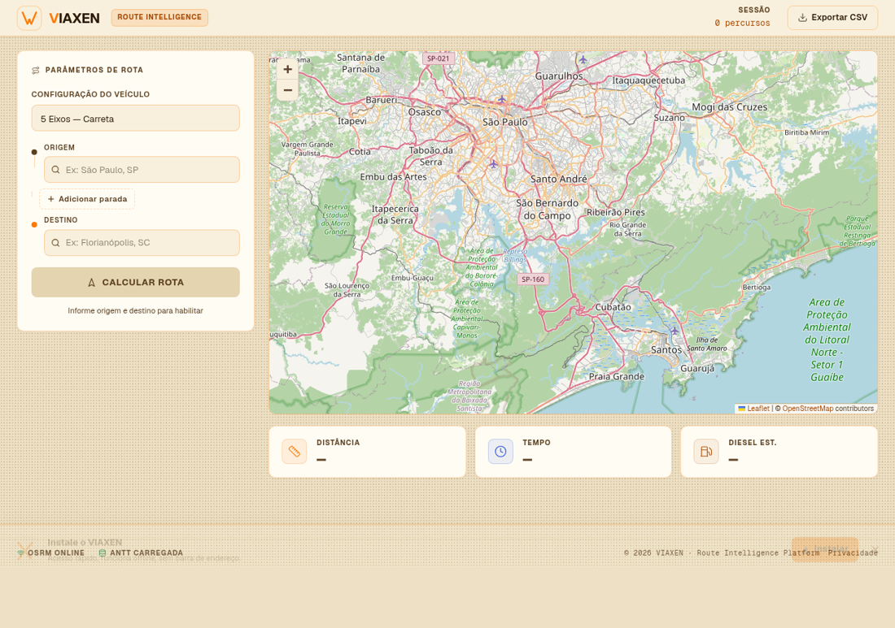
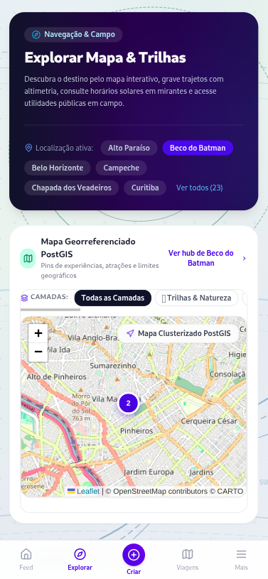
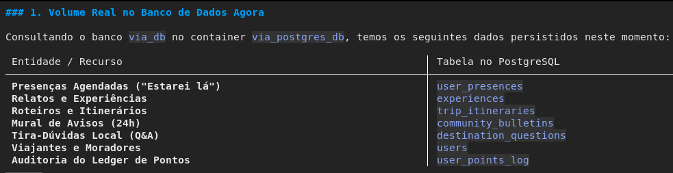
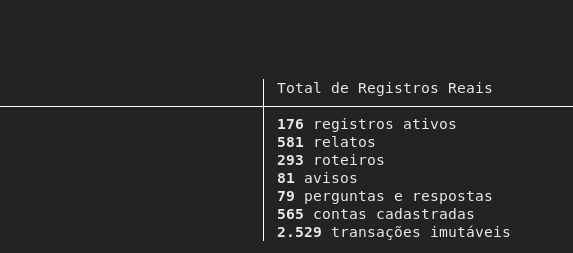
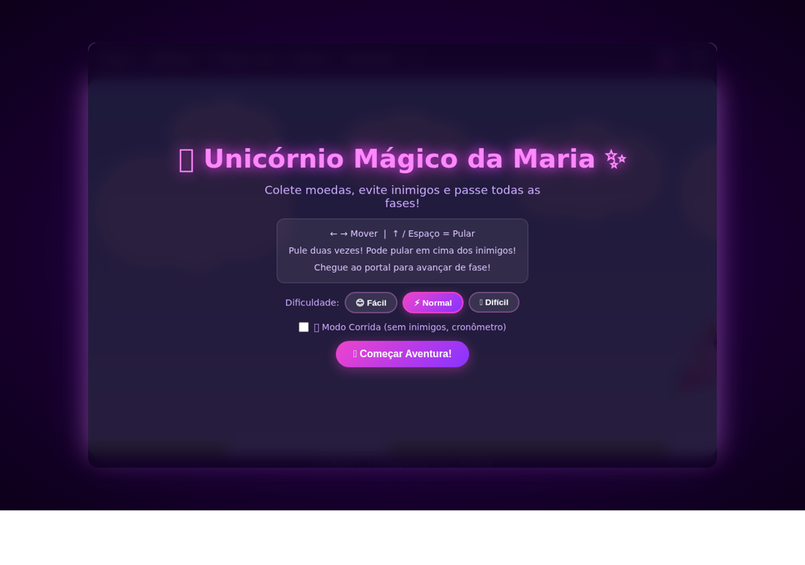

Sou Pedro Pompeu, full stack com base em gestão. Hoje na Nexxera com Django + Angular para o financeiro. Aplico IA a produto — RAG, agentes e validação de LLMs.
Números e telas reais dos projetos abaixo — sem dado sensível.
Produção primeiro. Conceitos marcados como conceitos.
Python · Django · Flask · Node.js · REST / OpenAPI · PostgreSQL · MariaDB
Angular · React · TypeScript · TailwindCSS
Agentes/tools · RAG · Prompt eng. · Validação de LLMs · Docker · AWS (EC2, S3) · CI/CD
Uma seleção das experiências mais relevantes — o histórico completo está no LinkedIn.
Soluções financeiras distribuídas: backend Django + frontend Angular, APIs REST seguras e testes unitários em Scrum.
PythonDjangoAngularRESTAPIs Flask entre microsserviços, migração de legado para TypeScript e ambientes Docker padronizados com testes.
FlaskMicrosserviçosTypeScriptDockerMicrosserviços Node/TS + Python com Postgres, interfaces Angular/React, AWS e CI/CD no GitLab.
Node.jsPostgreSQLAWSCI/CDTambém: Indicium (dados, Airflow/BI) · Pompeu Tech (freelance desde 2020) · IFSC (pesquisa Python/IoT). Formação: UDESC ADS + UFPel Administração.
Telas e dados reais dos meus projetos.

Descreva o projeto em português e GPT-4, Claude ou Gemini estrutura sprints, tasks com labels, checklists técnicos e datas — revisão por drag-and-drop e envio direto ao Trello. IA aplicada a um fluxo real de gestão, não chatbot de demonstração.
3 passos · zero configuração manual
SaaS B2B de logística: origem, paradas e destino no mapa (Leaflet + OSRM), 3 rotas alternativas, estimativa de frete pela tabela ANTT por eixo e tipo de carga, KPIs de distância, tempo e diesel, exportação CSV e PWA instalável que funciona offline. React 19 + TypeScript em monorepo pnpm, deploy na Vercel.
No ar · React + OSRM + ANTT Ver ao vivo →Código →
Explorar destinos pelo mapa interativo: trajetos com altimetria, mirantes, utilidades públicas e camadas (trilhas & natureza). Georreferenciamento PostGIS com mapa clusterizado Leaflet + OpenStreetMap e hub por destino.
PostGIS · Leaflet · 23 destinos

Auditoria direto no PostgreSQL: 7 tabelas vivas, do cadastro ao ledger imutável de pontos. Modelagem relacional que sustenta produto.
2.529 transações · 581 relatos · 565 contas
Engenheiro de Software e Desenvolvedor Full Stack com sólida experiência na construção e integração de APIs RESTful, serviços distribuídos e interfaces reativas — utilizando Python (Django, scripts de IA), TypeScript / JavaScript (Angular, Node.js e React) e bancos de dados SQL e NoSQL.
Vivência na criação de fluxos automatizados, pipelines de dados, aplicação de técnicas de Engenharia de Prompt, RAG e estruturação de Agentes e Tools de IA. Experiência em nuvem (AWS), conteinerização (Docker), práticas de CI/CD, testes e observabilidade sob metodologias ágeis (Scrum/Kanban). Formação em Análise e Desenvolvimento de Sistemas (UDESC) e Bacharelado em Administração (UFPel), unindo rigor técnico e visão estratégica de produto e conversas orientadas a negócio.
Me chama com: stack, modelo (PJ/CLT), remoto e 1 desafio do time.
pedrolpompeu@gmail.com
(53) 98109-7510
/in/pedro-pompeu · @pedropompeu